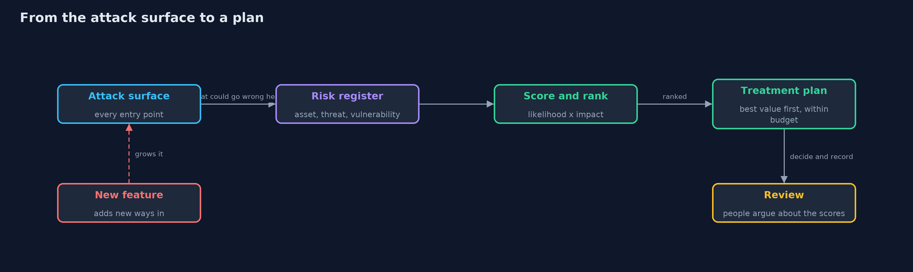
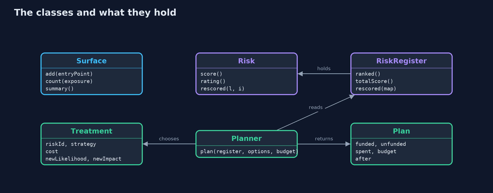
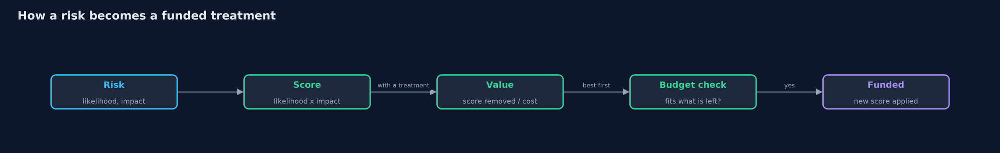
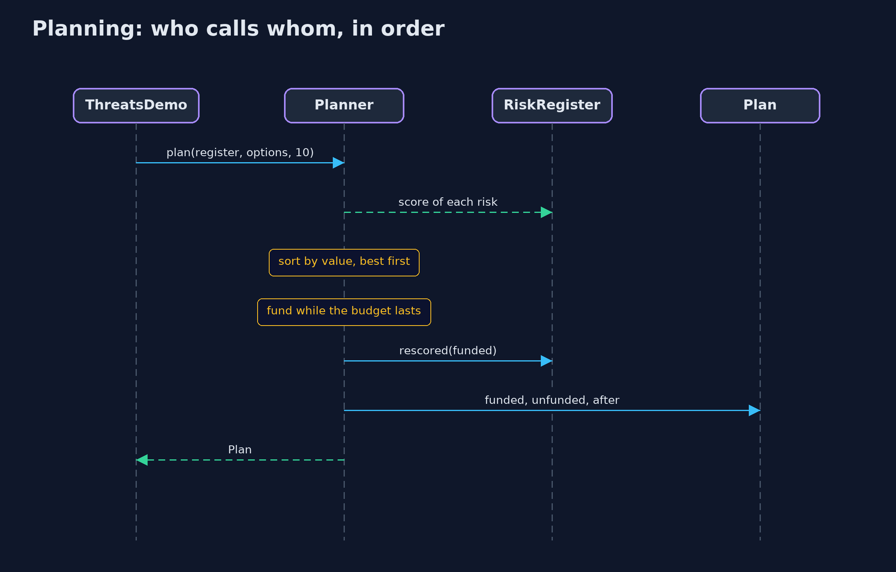

Threats and Risk
src/main/java/com/jk/explore/security/threats/
├── EntryPoint.java One way into the system, such as a web address the store answers, and the data behind it
├── Exposure.java Who can reach an entry point: anyone on the internet, a signed-in customer, or only staff
├── Plan.java The treatments that were paid for, what they cost, and the register as it looks afterwards
├── Planner.java Chooses which treatments to pay for
├── Rating.java A risk score turned into a word: up to 5 is low, up to 12 is medium, above that is high
├── Risk.java One thing that could go wrong
├── RiskRegister.java The list of risks, ranked from the worst to the least
├── Strategy.java What to do about a risk: reduce it, remove its cause, hand it to someone else, or live with it
├── Surface.java The attack surface: the list of every entry point an attacker could try
├── ThreatsDemo.java Runs the online store story in five numbered acts and prints exact, repeatable results
└── Treatment.java A proposed answer to one risk, what it costs, and the likelihood and impact left afterwards
Security starts with a list: every way in, everything that could go wrong, and a score that says what to fix first.
You cannot protect everything equally, so the first job in security is to decide what matters most. That takes four words. An asset is something worth protecting. A threat is someone or something that could harm it. A vulnerability is the weakness the threat would use. A risk is how likely the harm is, and how bad it would be. The attack surface is the list of every way in that an attacker could try.
This project builds a small risk register for an online store. It counts the ways in, scores seven risks as likelihood times impact, ranks them, spends a budget where it removes the most risk, and then shows why the scores are judgments and not measurements.
The idea in everyday terms
Think of a house owner before buying locks. First walk round and count every door, window and gap: that is the attack surface. Then ask what is inside worth stealing, who might try, and which weakness they would use. A rusty back-door lock on a house full of valuables comes before a fancy lock on the garden shed. That ordering is what a risk score is for.
The scenario
An online store has six ways in: a catalogue page, a login, a checkout, an order page, a refund tool and a customer export. Then the team ships a reviews feature and leaves a debug page behind, and the store has eight. Seven things could go wrong, from stolen order data to rivals scraping the price list. There is only a small budget to spend, so the team has to choose.
Run
./gradlew run
The demo tells the story in 5 acts, each printing exact numbers that the tests check:
| Act | What it shows |
|---|---|
| 1. The attack surface: every way in | The store has 6 ways in; shipping reviews and leaving a debug page behind makes it 8, with a third one open to everyone. |
| 2. Threat, vulnerability, asset, and risk | One risk named in full: customer orders, stolen, through an order page that does not check the owner, scored 4 times 4 is 16, high. |
| 3. Ranking the risks | Seven risks ranked by score: the order page 16, the debug page 15, the login 12, down to the price scraping at 4; the total is 73. |
| 4. Spending a budget where it removes the most | With a budget of 10, four treatments are paid for, the total score falls from 73 to 35, and the card risk is left waiting. |
| 5. The bill: a score is a judgment | Engineering and finance score two risks differently, and their top three differ; accepted risks need an owner and a review date. |
Test
./gradlew test
17 tests in DemoRunsTest, JudgmentTest, PlannerTest, RiskTest, SurfaceTest. Every line the demo prints is checked against docs/expected-output.txt, and ranking and planning use no clock and no randomness, so every run gives the same result.
What the simulation got right, and what it left out
The scores are fixed numbers chosen to make the lesson clear, and the planner is a simple greedy rule: buy the best value first while the budget lasts. Real teams use richer scales, money figures for impact, and judgment calls the rule cannot make, such as a mitigation that unlocks another. The point here is the vocabulary and the habit of ranking, not the formula.
Technologies and versions
| Technology | Version | Used for |
|---|---|---|
| Java | 25 | the code (toolchain set in build.gradle; Gradle finds or downloads the JDK) |
| Gradle | 9.2.1 (wrapper) | build and run, nothing to install |
| JUnit | 5.10.2 | the tests |
| videokit | repository tool (tools/videokit) |
the narrated video and animation: Piper en_US-amy-medium, speed 0.8, longer pauses (the amy-slow voice) |
Learning Material
| Document | What it is for |
|---|---|
| Problem statement | the situation and what the project must show |
| Prerequisites | what you need to know first |
| Threats and Risk, explained | the acts in prose |
| Session guide | a one-hour lesson with exercises |
| Animated walkthrough | the acts step by step, narrated |
| Threat model | what is protected, who could harm it, and how, using STRIDE |
| Spec | what this project must be true of |
| Expected output | the golden demo output every test and every port checks against |
The idea in one picture
The entry points give the places to look, each risk is scored and ranked, and the planner spends the budget on the best value first.

Where each piece sits
A Risk scores itself; a RiskRegister ranks and rescores; a Planner picks Treatments within a budget and returns a Plan.

How the data moves
A risk is scored, ranked and matched with a treatment; the treatment's value is the score it removes per unit of cost.

Who calls whom, in order

Video
video/threats-and-risk-explained.mp4 (with .m4a audio and .srt subtitles) is built by video/build_video.sh. Rendered media is not committed.
What it costs
- Scores are judgments. Likelihood and impact are estimates. Two sensible reviewers can score the same risk differently and rank the list differently.
- The list goes stale. Every new feature adds ways in, so the register has to be revisited, not written once.
- Accepting a risk is a decision, not a default. A risk left alone should have a named owner and a review date, or it is simply forgotten.
- Low scores add up. Seven small risks can be worth more than one medium one, which a ranked list alone does not show.
When this is too much
A one-person project with no customer data does not need a formal register. A short list on paper, with three columns for what, how bad and what to do, is enough. The register grows with the harm: the more a failure would cost, the more careful the list should be.
Where you have already met this
- A penetration test report, which is a ranked list of findings.
- The "threat model" step in a design review, which starts by drawing the entry points.
- A risk matrix in a company policy, a grid of likelihood against impact with red, amber and green cells.
- A security ticket labelled high, medium or low priority.
Where this sits
This project is the second one in foundations, after cia-triad, which names the three promises that a risk can break.